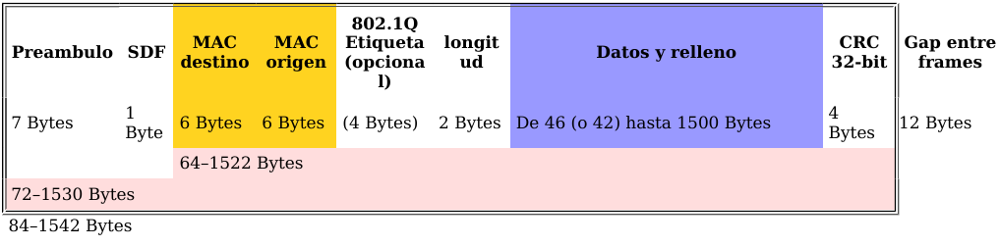
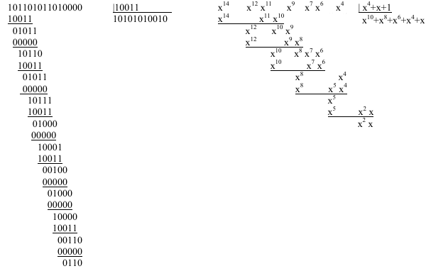

Trama Ethernet (IEEE 802.3)¶
La trama es la PDU de la capa de enlace. En Ethernet cableada usamos el formato IEEE 802.3.


Campos (visión SMR)¶
| Campo | Tamaño (aprox.) | Función |
|---|---|---|
| Preámbulo + SDF | 8 bytes | Sincronización y comienzo de trama |
| MAC destino / origen | 6 + 6 bytes | Quién recibe / quién envía |
| Longitud / Tipo | 2 bytes | Longitud o tipo de protocolo superior (p. ej. IPv4) |
| Datos (+ relleno) | 46–1500 bytes | Carga útil; mínimo 64 bytes de trama |
| FCS | 4 bytes | CRC-32 para detectar errores |
Dirección MAC (48 bits): se escribe en hex (F2:3E:C1:8A:B1:01). Los primeros 3 bytes suelen ser el OUI del fabricante; los últimos identifican la tarjeta. FF:FF:FF:FF:FF:FF es broadcast (todos en el dominio de difusión).
Etiqueta VLAN
En un enlace troncal puede aparecer una etiqueta 802.1Q (4 bytes). Lo detallamos en el Tema 6.
CRC (detección de errores)¶
- El emisor calcula un valor CRC y lo pone en el FCS.
- El receptor recalcula el CRC.
- Si no coincide → trama errónea → se descarta (el CRC no corrige; la retransmisión la pide la capa superior si hace falta).
Ventajas: implementación sencilla en hardware y buena detección de errores por ruido. Limitación: detecta, no corrige.


Actividades¶
-
AC401. (RA1 // CE1a, CE1c // 3p). Esquema de la trama IEEE 802.3: campos, tamaño aproximado y función. Incluye un ejemplo con valores hexadecimales inventados (MAC origen/destino, tipo 0x0800) y explica el papel del FCS/CRC.
-
AC402. (RA1 // CE1a, CE1c // 2p). Dado el siguiente volcado hexadecimal del inicio de una trama (sin preámbulo), identifica y marca cada campo: MAC destino, MAC origen, Longitud/Tipo y comienzo de los datos. Indica qué protocolo de capa superior transporta y si la trama va dirigida a un equipo concreto o a todos.
FF FF FF FF FF FF F2 3E C1 8A B1 01 08 06 00 01 08 00 06 04 00 01 F2 3E C1 8A B1 01 C0 A8 01 0A -
AC403. (RA1 // CE1a, CE1c // 3p). Un compañero ha capturado con Wireshark la siguiente trama al abrir una página web. Analízala y responde:
Frame 1: 74 bytes on wire (592 bits), 74 bytes captured (592 bits) Ethernet II, Src: Dell_3a:7c:11 (d4:be:d9:3a:7c:11), Dst: Cisco-Li_5c:2e:01 (00:14:bf:5c:2e:01) Internet Protocol Version 4, Src: 192.168.1.10, Dst: 93.184.216.34 Transmission Control Protocol, Src Port: 50000, Dst Port: 80, Seq: 0, Len: 0 0000 00 14 bf 5c 2e 01 d4 be d9 3a 7c 11 08 00 45 00 0010 00 3c 1c 46 40 00 40 06 26 e9 c0 a8 01 0a 5d b8 0020 d8 22 c3 50 00 50 a1 b2 c3 d4 00 00 00 00 a0 02 0030 fa f0 7c 3e 00 00 02 04 05 b4 04 02 08 0a 00 01 0040 2c 3d 00 00 00 00 01 03 03 07- Marca en el volcado hexadecimal los bytes de la MAC destino, la MAC origen y el campo Tipo. ¿A partir de qué byte empiezan los datos?
- ¿Qué protocolo de capa superior indica el campo Tipo? Justifícalo con su valor.
- Separa el OUI de cada MAC. ¿Qué fabricante muestra Wireshark para cada una? Compruébalo en una base de datos pública de OUI.
- ¿Es una trama unicast o broadcast? ¿Por qué?
- Wireshark dice que la trama ocupa 74 bytes, pero no aparecen ni el preámbulo + SFD ni el FCS. ¿Por qué crees que no se muestran? ¿Cuántos bytes ocupa realmente la trama completa en el cable?
- ¿Ha sido necesario añadir relleno? Razónalo con el tamaño mínimo de trama.
-
AC404. (RA1 // CE1a // 2p). Clasifica las siguientes direcciones MAC como unicast o broadcast, separa en cada una el OUI de la parte que identifica la tarjeta y busca el fabricante de las que sean unicast:
00:1B:63:84:45:E6FF:FF:FF:FF:FF:FF3C:5A:B4:12:9F:0CB8:27:EB:A1:22:7D
-
AC405. (RA1 // CE1a, CE1c // 2p). Responde razonadamente con cálculos:
- ¿Cuál es el tamaño mínimo y máximo de una trama 802.3 (sin contar preámbulo/SFD)?
- Si un equipo envía solo 20 bytes de datos, ¿cuántos bytes de relleno se añaden?
- Para una trama con 1500 bytes de datos, ¿qué porcentaje de la trama es carga útil? ¿Y con 46 bytes? ¿Qué conclusión sacas sobre la eficiencia?
-
AC406. (RA1 // CE1c // 3p). Simula el funcionamiento del CRC con un ejemplo reducido. Usa el mensaje
1101y el polinomio generador1011:- Calcula el resto mediante división binaria (XOR) y obtén la secuencia que se transmitiría.
- Haz de receptor: comprueba que la secuencia correcta da resto 0.
- Cambia un bit de la secuencia (simula ruido) y demuestra que el receptor detecta el error.
- Explica qué hace el equipo con esa trama y quién se encarga de la retransmisión.